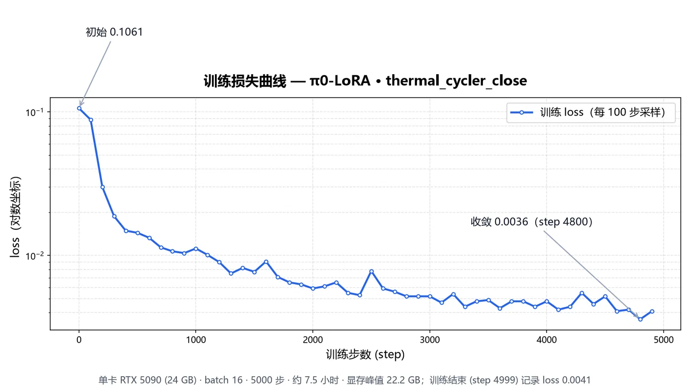
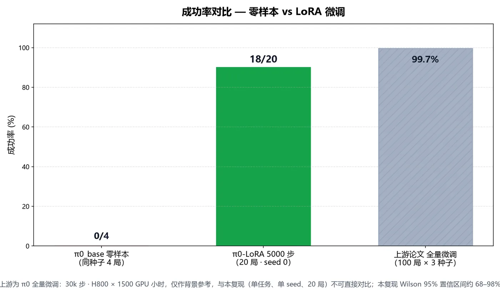
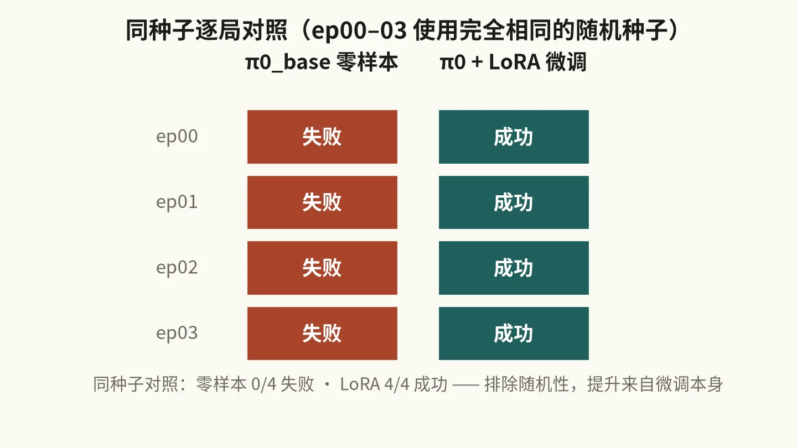

AutoBio 复现笔记：单张 RTX 5090 + 5000 步 LoRA，实验室机器人成功率从 0% 做到 90%
这是一篇 AutoBio 基准的复现与学习记录，不是原创工作。AutoBio 基准（仿真环境、任务、数据集、代码与论文）归属原作者团队，π0 模型归属 Physical Intelligence。这份 fork 只做了三件事：修好上游冻结快照里的几处失效代码、用消费级显卡跑通一个单任务的 LoRA 微调、把代码／权重／评测素材全部开源。文中所有数字与产物链接均可复核。

0. 结论先行（TL;DR）
我在一张 RTX 5090（24 GB 显存，sm_120）上复现了 AutoBio 基准中的 thermal_cycler_close（关闭 PCR 热循环仪盖子）任务：用 π0 模型的 LoRA 微调替代上游论文的全参数微调，5000 步、约 7.5 小时，把成功率从零样本的 0% 做到 18/20 = 90%。
| 模型 | 训练方式 | 数据 | 硬件 | 成功率 |
|---|---|---|---|---|
| π0_base 零样本（6 局冒烟） | 无 | — | RTX 5090 | 0/6（0%） |
| π0_base 零样本（与微调同种子 4 局） | 无 | — | RTX 5090 | 0/4（0%） |
| 本复现 π0-LoRA（5000 步） | LoRA | 100 条演示 | 1× RTX 5090 24GB，约 7.5 h | 18/20（90%） |
| 上游论文 π0 全量微调（30k 步） | 全参数 | 100 条演示 | H800 × 1500 GPU 小时 | 99.7 ± 0.3% |
三个重点，先说清楚：
- 成本：上游全量微调约 1500 GPU 小时（H800），本复现约 7.5 GPU 小时（单张 5090），训练算力约为上游的 1/200。这是本文最想表达的点——"消费级单卡 + LoRA"完全跑得通。
- 不是吊打上游：单任务（还是 12 个任务里最简单的一个）、单 seed、20 局小样本、LoRA 而非全量微调，与上游论文不可直接对比。我的 90% 是"证明可行"，上游的 99.7% 是"测到最优"。
- 对照设计：零样本与微调模型用了完全相同的 4 个随机种子（ep00–ep03），结果零样本 4 局全失败、LoRA 4 局全成功——排除随机性，提升来自微调本身。
整体流程一览：

1. AutoBio 是什么？为什么要复现它
AutoBio 是 2025 年发布的一个数字生物实验室机器人自动化仿真与基准（论文：AutoBio: A Simulation and Benchmark for Robotic Automation in Digital Biology Laboratory）。它把生物实验室里的常见操作（开关 PCR 热循环仪盖子、拿离心管、拧管盖、移液、装离心机转子等 12 个任务）做成了 MuJoCo 仿真环境，并提供两套渲染风格（MuJoCo / Blender Cycles）的 LeRobot v2.0 格式数据集，用于训练和评测视觉-语言-动作模型（VLA）。
我选它复现，是因为它有三个很"硬"的点：
- 任务真实：不是抓积木，而是生物实验操作，动作有明确的成败判定；
- 数据规范：官方 HuggingFace 数据集，LeRobot 格式，训练／评测流程齐全；
- VLA 直接可训：官方仓库带 openpi（π0）和 RDT 两套训练栈。
难点在于：上游论文的实验成本太高。π0 全量微调 30k 步、H800 × 1500 GPU 小时——个人根本不可能复现这个量级。所以我换了思路：用 openpi 官方支持的 LoRA 微调，只训适配器、冻结基座，一张 24 GB 的消费级显卡就够了。
2. 硬件与运行环境
| 项 | 配置 |
|---|---|
| GPU | RTX 5090 D v2，24 GB 显存，算力架构 sm_120（Blackwell） |
| 系统 | Windows 11 + WSL2 Ubuntu 24.04，物理内存 48 GB |
| 软件 | autobio 侧 conda 环境；openpi 侧 uv 环境 |
| 渲染 | MuJoCo 无头 EGL（MUJOCO_GL=egl） |
为在 RTX 5090 + WSL2 上跑通，环境层做了 4 处关键改造（详见第 7 节踩坑实录）：
- 必须给所有 openpi 命令加
XLA_FLAGS="--xla_gpu_enable_triton_gemm=false"，否则 JAX/Triton 在 sm_120 上编译直接崩； openpi/uv.lock固定nvidia-cuda-nvcc-cu12==12.9.86，这是识别 sm_120 所需的最低 nvcc 版本；- WSL2 曾因训练进程内存涨到 35.5 GB 触发整机 OOM 重启，调整
.wslconfig为memory=36GB / swap=16GB； - MuJoCo 必须用 EGL 无头渲染（
MUJOCO_GL=egl，多卡时加MUJOCO_EGL_DEVICE_ID）。
3. 第一步：修好一个"冻结"的上游快照
上游仓库是 2025 年年中发布的 pre-release 快照，官方自己注明"preliminary version，代码库正在结构性重构"，之后约 16 个月没有实质更新，且没有 LICENSE 文件。快照里积累了几处失效代码，全部修好才能跑：
① 6 处失效的任务 import 路径（autobio/task.py）。上游把任务文件重命名过，但 task.py 里的导入还是旧名字，导致 12 个任务全部无法导入。修复映射如下：
| 任务名（task.py 中） | 修复后导入的模块 |
|---|---|
pickup | pickup_centrifuge_tube |
insert | transfer_centrifuge_tube |
screw_loose | screw_loosen |
screw_tighten | screw_tighten |
insert_centrifuge_5430 | load_centrifuge_5430 |
vortex_mixer | mani_vortex_mixer |
坑：任务模块名和 HuggingFace 数据集 ID 并不总是同名。比如insert_centrifuge_5430这个任务，对应的 HF 数据集叫 "Load centrifuge rotor"（映射到load_centrifuge_5430模块）。以autobio/task.py里create_task()接受的任务名为准。
② openpi/scripts/train.py 的 SLURM bug。上游 wrap() 函数缺一个 return，导致非 SLURM 机器上训练结束后抛 KeyError: SLURM_JOB_ID（发生在 checkpoint 保存之后，不影响训练结果，但会让人以为训练失败了）。
③ openpi/uv.lock 的 nvcc 版本：升到 12.9.86 以支持 RTX 5090 的 sm_120。
此外 fork 里新增了三个自用工具：
openpi/scripts/export_lora.py：把训练出的 LoRA 增量导出成便携 npz（100 MB，只含lora_a／lora_b，bf16 以 uint16 位视图存储）；openpi/scripts/load_lora.py：加载 npz 并按W + lora_b @ lora_a * scaling合并回基座权重；openpi/demo_pi0_infer.py：不接仿真、不接画面的纯 π0 推理演示，用来快速验证环境。
4. 数据：必须用 MuJoCo 渲染版本
直接使用 HuggingFace 上 autobio-bench 官方数据集的 -mujoco 版本：thermal_cycler_close-mujoco，100 条专家演示，LeRobot v2.0 格式。转换成本地 LeRobot 数据目录后，按任务计算归一化统计量（norm stats），即可进入训练管线。
坑：数据集有 MuJoCo 和 Blender 两个渲染版本。评测环境是 MuJoCo 渲染，训练数据也必须用 -mujoco 版本。训练数据与评测环境渲染风格不一致，成功率会直接归零。
5. 训练：LoRA 微调 π0
训练命令（RTX 5090 必带 XLA_FLAGS）：
# 在 openpi 目录下启动训练
cd openpi
XLA_FLAGS="--xla_gpu_enable_triton_gemm=false" \
JAX_PYTHON_CLIENT_MEM_FRACTION=0.85 \
uv run scripts/train.py thermal_cycler_close-lora \
--exp-name lora5k \
--batch-size 16 \
--save-interval 1000 \
--no-wandb-enabled
关键配置：
- 基座：
pi0_base（PaliGemma 2B 视觉语言骨干 + 300M 动作专家）； - LoRA：
gemma_2b_lora（rank 16 / alpha 16）+gemma_300m_lora（rank 32 / alpha 32），scaling = alpha/rank = 1.0，冻结原权重； - 数据：
thermal_cycler_close-mujoco100 episodes，batch 16； - 步数：5000（每 1000 步存一次 checkpoint），约 5.3 s／步，墙钟 约 7.5 小时；
- 显存峰值 22.2 GB / 24 GB（训练期间几乎顶满）；
- 损失：0.1061（step 0）→ 0.0041（step 4999）。

关于 LoRA 秩的选择：骨干网络用 rank 16／动作专家用 rank 32，直接沿用 openpi 提供的gemma_2b_lora与gemma_300m_lora预设，没有做秩搜索。动作专家负责输出连续动作块、参数量只有 300M，给它更高的秩是合理的默认设置。这是一次跟随官方推荐配置的复现，不是一次超参消融。
6. 评测：双进程架构 + 同种子对照
评测沿用上游的"策略服务器 + 评测客户端"双进程架构：openpi 起一个 WebSocket 策略服务，autobio 的 evaluate.py 通过 MuJoCo 仿真把观测喂给它、拿回动作、判定成败。
# 终端 1：起策略服务 cd openpi XLA_FLAGS="--xla_gpu_enable_triton_gemm=false" uv run scripts/serve_policy.py --port 8000 \ policy:checkpoint --policy.config thermal_cycler_close-lora \ --policy.dir checkpoints/thermal_cycler_close-lora/lora5k/4999 # 终端 2：跑评测（本机回环，训练结束后再启动） cd autobio MUJOCO_GL=egl MUJOCO_EGL_DEVICE_ID=0 python evaluate.py --host 127.0.0.1 --port 8000 \ --task thermal_cycler_close --num_episodes 20 --seed 0 --save eval_lora5k.json
主结果：20 局（seed 0）成功 18 局，90%。逐局结果 JSON 已入库（results/eval_thermal_cycler_close_lora5k.json）。下面每一格对应一次真实 rollout：

同种子对照实验（我觉得这是整篇最值得看的图）：为了让"零样本失败 → 微调成功"这个对比不被人质疑是运气，我把零样本和 LoRA 放在完全相同的 4 个随机种子（ep00–ep03）上各跑一遍——零样本 4 局全失败，LoRA 4 局全成功。初始布局、物体位姿完全一致，唯一变量就是模型权重。

与上游 99.7% 的对比口径（务必看）：上游是 π0 全量微调 30k 步、H800 × 1500 GPU 小时、100 局 × 3 种子取均值，而我是单任务、单 seed、20 局 LoRA。二者不可直接对比——这 90% 的 Wilson 95% 置信区间大约在 68%–98%，样本量决定了它的精度上限。诚实的说法是："消费级单卡 + 7.5 小时 LoRA，就能达到工程上可用的成功率"，而不是"复现了论文成绩"。
7. 踩坑实录
训练侧
- XLA/Triton 在 sm_120 上编译崩溃：RTX 5090（Blackwell）上 JAX/Triton GEMM 编译会直接挂进程。解法：所有 openpi 命令都加
XLA_FLAGS="--xla_gpu_enable_triton_gemm=false"。 - nvcc 版本必须 ≥ 12.9.86 才认识 sm_120，否则 CUDA 侧直接失败。
- WSL2 内存 OOM 整机重启：训练进程内存一度涨到 35.5 GB，把整个 WSL 带崩。解法：
.wslconfig限制memory=36GB、swap=16GB。 - 训练与推理服务不能同时跑：
serve_policy.py会预占约 2 GB 显存，把训练从 5.3 s／步拖到 29 s／步。评测前先停掉训练。 - train.py 的 SLURM bug：非 SLURM 机器上训练结束后抛
KeyError: SLURM_JOB_ID（见第 3 节），已修。
推理与数据侧
- LoRA 导出报
ValueError（数组不连续）：orbax 还原的参数视图可能不满足内存连续要求，导出前必须np.ascontiguousarray。 - MuJoCo 无头渲染：必须
MUJOCO_GL=egl，多卡再加MUJOCO_EGL_DEVICE_ID，否则评测直接崩。 - RTX 5090 + WSL2 的
dxg ioctl失败：这是 NVIDIA 论坛与 microsoft/WSL#41224 都有记录的社区已知问题，遇到别慌，属于平台兼容性坑。
上传与发布侧
- HuggingFace Xet 上传不读代理：
huggingface_hub2.x 默认走 Xet 传输，不读HTTP_PROXY，导致WinError 10060无限重试。解法：HF_HUB_DISABLE_XET=1并显式配置代理。 - HF 单文件上传不支持跨进程断点续传：每次运行新建 LFS 会话，旧分片作废。这决定了长传必须"进程不死"——带控制台的进程一旦被关终端就会连带收到 CTRL_CLOSE 事件被杀。最终解法：
pythonw.exe（无控制台）+ 脚本自写日志。 - 上行带宽晚高峰拥塞：同节点同时刻下行与上行可以差近 100 倍，上传大文件要错峰并留出重试时间。
- 凭证卫生：任何写入临时脚本的访问令牌，用完立即清理，并且永远不入库。本次全部产物推送改用环境变量与凭据管理器传递。
8. 开源产物
| 内容 | 地址 | 大小／说明 |
|---|---|---|
| 代码仓库（含全部修复与工具） | github.com/Feiyang2007/AutoBio | 最新 commit df8dfcf |
| LoRA 增量（npz） | GitHub Release | 约 100 MB，20 个张量，bf16 以 uint16 位视图存储 |
| 完整 checkpoint | HF CloudTugWind/…-lora5k | 约 4.9 GB orbax checkpoint（step 4999），可被 serve_policy.py 直接加载 |
| 评测素材 | HF dataset …-media | 约 75 MB：4 段成功 + 4 段失败（同种子配对、各 3 机位）、loss 曲线、成功率图、逐局 JSON |
下载完整 checkpoint 并评测：
huggingface-cli download CloudTugWind/AutoBio-pi0-thermal-cycler-close-lora5k \
autobio_pi0_tc_close_lora5k_ckpt.tar --local-dir .
tar -xf autobio_pi0_tc_close_lora5k_ckpt.tar # -> ./4999/
cd openpi
XLA_FLAGS="--xla_gpu_enable_triton_gemm=false" uv run scripts/serve_policy.py --port 8000 \
policy:checkpoint --policy.config thermal_cycler_close-lora --policy.dir /path/to/4999
9. 总结与下一步
这次复现证明了什么：一个被官方冻结、堆了 16 个月失效代码的上游快照，是可以被个人逐步修好并跑通的；VLA 微调不一定需要 A100/H800——单张消费级显卡 + LoRA + 7.5 小时，就能在真实任务上获得工程可用的成功率，训练算力约为上游全量微调的 1/200。
它没证明什么：这不是论文成绩的复现，不能外推多任务／多 seed 的泛化能力，20 局的置信区间也很宽。
如果继续做，我看到的几个方向：把 12 个任务全部跑一遍 LoRA 建立成本曲线；多 seed 评测把置信区间收窄；比较 LoRA 与全量微调的数据效率；尝试 Blender 渲染版数据看域迁移；以及用同一套流程复现 RDT 栈做交叉验证。
引用与归属：本复现基于 AutoBio: A Simulation and Benchmark for Robotic Automation in Digital Biology Laboratory（arXiv:2505.14030）与其官方仓库 autobio-bench/AutoBio；模型基座为 Physical Intelligence 的 π0 与开源实现 openpi。上游快照未附 LICENSE 文件，本 fork 仅公开自己新增与修改的部分。